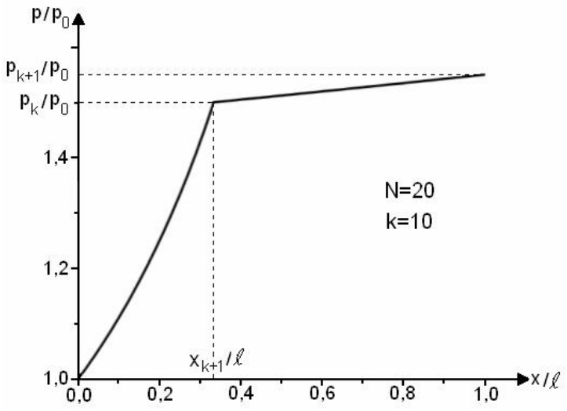

채점 기준(Marking scheme)
올바른 풀이라면 어떤 방법이든 점수를 준다.
대기압 $p_0$, 온도 $T_0$에서 처음에 타이어 안에 들어 있는 공기의 몰수에 대한 식 0.20 pt
\[\nu_{initial}=\frac{p_0\cdot V_r}{R\cdot T_0}\]펌프질 한 번(한 주기)마다 타이어 안으로 넣어지는 공기의 몰수에 대한 식 0.20 pt
\[\begin{cases}\nu_0=\dfrac{p_0\cdot V_p}{R\cdot T_0}\\[2mm] \nu_0=\dfrac{p_0\cdot V_r}{R\cdot T_0\cdot N}\end{cases}\]학생이 손으로 움직이는 피스톤이 달린 펌프로 공기를 $k$번 넣은 뒤 타이어 안에 있는 공기의 몰수 $\nu_k$에 대한 식 0.20 pt
\[\nu_k=\nu_{initial}+k\cdot\nu_0\]학생이 공기를 $k$번 넣은 뒤 타이어 안 공기의 압력 $p_k$에 대한 식 0.20 pt
\[p_k\cdot V_r=\nu_k\cdot R\cdot T_0\]자전거 펌프 안에 있는 공기에 등온 변화(isothermal transformation) 법칙을 적용 0.20 pt
\[p_0\cdot\frac{V_r}{N}=p_k\cdot S\cdot\left(\ell-x_{k+1}\right)\]관찰: 함수 $p(x)$의 1계 도함수는 정의역 전체에서 양수이다.
관찰: 밸브가 열리는 점의 왼쪽과 오른쪽에서 압력은 꺾인 점(angular point)을 보인다.
관찰: 2계 도함수 역시 정의역 전체에서 양수이다.

$k_0\ge N\cdot(n-1)$이며, 펌프질 주기의 횟수 $k_0$는 자연수이다. 0.20 pt
$N\cdot(n-1)$이 자연수이면 $k_0=N\cdot(n-1)$, 0.60 pt
또는 $N\cdot(n-1)$이 자연수가 아니면 $k_0=\left[N\cdot(n-1)\right]+1$.
압력 $p_0$에서 압력 $p_{k-1}$까지 등온적으로 변하는 $\nu_1$ 몰의 공기에 대해 학생이 해야 하는 일을 구한다. 0.20 pt
\[L_{K,I}=\nu_1\cdot R\cdot T_0\cdot\ln\frac{p_{k-1}}{p_0}\]압력 $p_{k-1}$에서 압력 $p_k$까지 등온적으로 변하는 $\nu_k$ 몰의 공기에 대해 학생이 해야 하는 일에 대한 식 0.20 pt
\[L_{K,II}=\nu_k\cdot R\cdot T_0\cdot\ln\frac{p_k}{p_{k-1}}\]$k$번째 펌프질 주기 동안 학생이 해야 하는 전체 일에 대한 식 0.20 pt
\[\begin{cases}L_{K,total}=L_{K,I}+L_{K,II}\\[1mm] L_{K,total}=\dfrac{p_0\cdot V_r}{N}\cdot\ln\dfrac{N+k-1}{N}+\dfrac{p_0\cdot V_r\cdot(N+k)}{N}\cdot\ln\dfrac{N+k}{N+k-1}\\[3mm] L_{K,total}=\dfrac{p_0\cdot V_r}{N}\cdot\left[\ln\dfrac{N+k-1}{N}+(N+k)\cdot\ln\dfrac{N+k}{N+k-1}\right]\end{cases}\]학생이 펌프질을 시작한 순간부터 타이어 안의 압력이 $n\cdot p_0$가 되는 순간까지 하는 전체 일에 대한 식 0.20 pt
\[L_{total}=\frac{p_0\cdot V_r}{N}\cdot\sum_{k=1}^{N\cdot(n-1)}\left[\ln\frac{N+k-1}{N}+(N+k)\cdot\ln\frac{N+k}{N+k-1}\right]\]$k=10$번의 펌프질 주기 뒤 타이어 안 공기의 몰수 0.20 pt
\[\nu_{10}=0{,}43\ \text{mol}\]10번의 펌프질 주기 뒤 타이어 안 공기의 압력 값 0.20 pt
\[p_{10}=1{,}52\cdot10^5\ \frac{\text{N}}{\text{m}^2}\]타이어 안 공기의 압력이 $n\cdot p_0$에 도달하는 데 필요한 주기 수 0.20 pt
\[\begin{cases}k_0=\left[20\cdot(2{,}51-1)\right]+1\\ k_0=31\end{cases}\]10번째 펌프질 주기 동안 학생이 해야 하는 일의 값 0.20 pt
\[\begin{cases}L_{10,total}=\dfrac{\left(1{,}01\cdot10^5\ \dfrac{\text{N}}{\text{m}^2}\right)\cdot\left(7{,}00\cdot10^{-3}\ \text{m}^3\right)}{20}\cdot\left[\ln\dfrac{29}{20}+30\cdot\ln\dfrac{30}{29}\right]\\[5mm] L_{10,total}\cong 49{,}1\ \text{J}\end{cases}\]타이어 안 공기의 부분 압력(partial pressure) $p_{aer}(T_0)$에 대한 식 0.20 pt
\[\begin{cases}p_{aer}(T_0)=p-p_{s,0}\\ p_{aer}(T_0)=2{,}477\cdot p_0\end{cases}\]주어진 사용 조건에서 타이어 안 압력의 값 0.20 pt
\[p_1=2{,}257\times10^5\ \text{N}\cdot\text{m}^{-2}\]타이어가 보관된 방 안에서 질소 분자의 농도(concentration) $n_e^*$에 대한 식 0.20 pt
\[\begin{cases}n_e^*=\dfrac{p_0}{T_0}\cdot\dfrac{1}{k_B}\\[3mm] n_e^*=\dfrac{p_0}{T_0}\cdot\dfrac{N_A}{R}\end{cases}\]타이어 안에서 질소 분자의 농도 $n_i^*$에 대한 식 0.20 pt
\[\begin{cases}n_i^*=2{,}51\cdot\dfrac{p_0}{T_0}\cdot\dfrac{N_A}{R}\\[3mm] n_i^*=2{,}51\cdot\dfrac{p_0}{T_0}\cdot\dfrac{1}{k_B}\end{cases}\]타이어 바깥에서 모든 방향으로부터 오는 분자 선속 밀도(density of the flux of molecules) $N_e^*$에 대한 식 0.20 pt
\[\begin{cases}N_e^*=\dfrac14\cdot n_e^*\cdot\bar v\\[3mm] N_e^*=\dfrac14\cdot\dfrac{p_0}{T_0}\cdot\dfrac{N_A}{R}\cdot\sqrt{\dfrac{8R\cdot T_0}{\pi\cdot\mu_{azot}}}\end{cases}\]타이어 안쪽에서 모든 방향으로부터 오는 분자 선속 밀도 $N_i^*$에 대한 식 0.20 pt
\[\begin{cases}N_i^*=2{,}51\cdot\dfrac14\cdot n_i^*\cdot\bar v\\[3mm] N_i^*=2{,}51\cdot\dfrac14\cdot\dfrac{p_0}{T_0}\cdot\dfrac{N_A}{R}\cdot\sqrt{\dfrac{8R\cdot T_0}{\pi\cdot\mu_{azot}}}\end{cases}\]타이어 안쪽에서 모든 방향으로부터 와서 단위 시간에 바늘구멍(pinhole)의 면에 부딪히는 질소 분자의 수 $N_i$에 대한 식 0.20 pt
\[N_i=2{,}51\cdot\frac14\cdot\frac{p_0}{T_0}\cdot\frac{N_A}{R}\cdot S\cdot\sqrt{\frac{8R\cdot T_0}{\pi\cdot\mu_{azot}}}\qquad N_i=2{,}51\cdot p_0\cdot N_A\cdot S\cdot\sqrt{\frac{1}{2\pi\cdot\mu_{azot}\cdot R\cdot T_0}}\]타이어 바깥에서 모든 방향으로부터 와서 단위 시간에 바늘구멍의 면에 부딪히는 질소 분자의 수 $N_e$에 대한 식 0.20 pt
\[N_e=\frac14\cdot\frac{p_0}{T_0}\cdot\frac{N_A}{R}\cdot S\cdot\sqrt{\frac{8R\cdot T_0}{\pi\cdot\mu_{azot}}}\qquad N_e=p_0\cdot N_A\cdot S\cdot\sqrt{\frac{1}{2\pi\cdot\mu_{azot}\cdot R\cdot T_0}}\]($\mu_{azot}$: 질소(루마니아어 azot)의 몰 질량)
시간 $dt$ 동안 타이어 바깥에서 와서 작은 구멍의 면 $S$에 부딪히는 질소 분자의 수에 대한 식 0.20 pt
\[\begin{cases}\aleph_e=S\cdot N_e^*\cdot dt\\[1mm] \aleph_e=\dfrac14\cdot\dfrac{p_0}{T_0}\cdot\dfrac{N_A}{R}\cdot\bar v\cdot S\cdot dt\end{cases}\]시간 $dt$ 동안 타이어 안쪽에서 와서 작은 구멍의 면 $S$에 부딪히는 질소 분자의 수에 대한 식(압력에 의존한다) 0.20 pt
\[\begin{cases}\aleph_i=\dfrac14\cdot n^*(p)\cdot\bar v\cdot S\cdot dt\\[3mm] \aleph_i=\dfrac14\cdot\dfrac{p}{T_0}\cdot\dfrac{N_A}{R}\cdot\bar v\cdot S\cdot dt\end{cases}\]타이어 안의 분자 수 0.20 pt
\[\aleph=\frac{p\cdot V_r}{R\cdot T_0}\cdot N_A\]타이어 안 분자 수의 변화에 대한 식 0.20 pt
\[\begin{cases}d\aleph=\aleph(t+dt)-\aleph(t)\\[1mm] d\aleph=\dfrac{V_r\cdot N_A}{R\cdot T_0}\cdot\left(p(t+dt)-p(t)\right)\\[3mm] d\aleph=\dfrac{V_r\cdot N_A}{R\cdot T_0}\cdot dp\end{cases}\]© 채점 기준 작성:
Prof. dr. Delia DAVIDESCU
Conf. univ. dr. Adrian DAFINEI